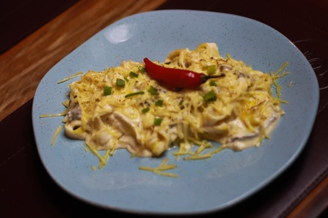

Strogonoff de Frango

Ingredientes
- 1 peito de frango
- 1 creme de leite
- 1 tablete caldo de galinha
- 1 dente de alho picado
- 1 cebola picada
- 1/2 colher de sopa de sal
- 3 colheres de sopa de manteiga
- 2 colher de sopa de molho de tomate
- Pimenta do reino a gosto
Modo de Preparo
- Corte o frango em cubos e tempere com sal e pimenta do reino.
- Doure o frango em uma frigideira com manteiga.
- Em outra panela, refogue o alho e a cebola e depois adicione o frango.
- Adicione o caldo de galinha, o molho de tomate e o creme de leite. Misture bem.
- Sirva com arroz e batata frita.
Voltar para a lista de receitas